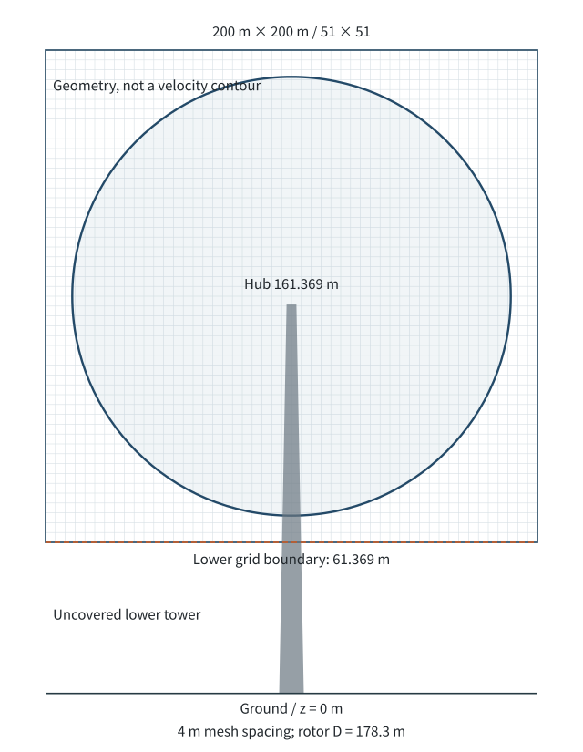
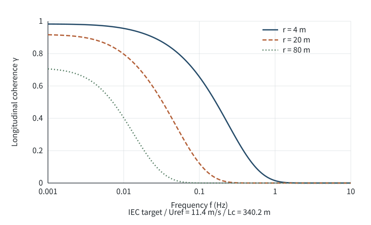

风荷载图件 · V8-R11
实际参数绘制的网格、目标谱、目标相干曲线与已归档36工况的响应统计。未取得原始BTS，本页不包含实测或实际TurbSim风速云图、自谱验证图。
风场网格与高度覆盖

51×51，4 m间距；网格下边界61.369 m。几何示意。 下载SVG原图三分量Kaimal目标功率谱
 11.4 m/s、A类、NTM；理论曲线。 下载SVG原图
11.4 m/s、A类、NTM；理论曲线。 下载SVG原图纵向风速空间相干目标曲线

间距4、20、80 m；理论曲线。 下载SVG原图NTM与ETM峰值响应统计
 表3-16历史OpenFAST六seed均值±标准差；非新增求解。 下载SVG原图
表3-16历史OpenFAST六seed均值±标准差；非新增求解。 下载SVG原图图件来源及参数清单